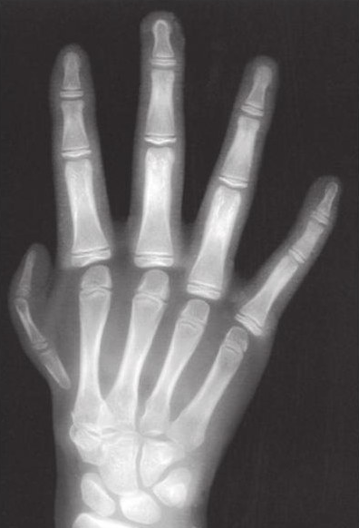

Orto QuestõesCirurgia da Mão
Para quem estuda a Mão
Mais de 3.000 questões de Mão.
Todas comentadas, como uma aula, com o livro de referência.

Green 7ª ed., Fig. 38.1A
1.572
questões das provas de ingresso
USP, PUC-SP, UFG, ENARE e outras
1.536
no padrão da prova de título
OrtoQuestões Simulados, como na prova
Comentário que ensinaa certa e cada errada explicadas, com o Green
Cronograma até a sua provaum plano para o ingresso e outro para o título
Temas que mais caemo ranking de cada prova, do que mais cai ao que menos cai
Resumos dos capítulos do Greenmais de 30, ligados às questões do tema
Envie para o seu amigo que estuda para a Mãoe treinem juntos, de graça · ortoquestoes.com.br